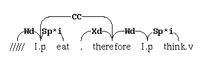

CONTENTS
1. Introduction
2. Terminology and Concepts
3. A Simple Example
4. Basic Operations
5. Another Example
6. Reference Manual
1. Introduction
The original version of the parser was designed around a standard interface, where the user types in a sentence, and the parser displays the linkages that it finds. This is fine for showing how the grammar and parser work, but in order to make actual use of the information that the parser provides, it is necessary to have access to its inner workings. The Link Parser API was written to give users flexibility in using the parser in their applications. Examples of the kind of capability the API provides include:The API provides a set of basic data structures and function calls that allow the programmer to easily design a customized parser. The primary API is written in ANSI C, and runs in both UNIX (Linux, MacOS) and MS Windows environments.
- Open up more than one dictionary at a time.
- Parse a sentence with different dictionaries or parsing parameters, and compare the results.
- Limit the time and memory that the parsing process takes.
- Use different "cost functions" for ranking linkages.
- Save linkages from a sentence, and access individual links.
- Post-process a sentence with more than one set of post-processing rules.
- Extract the domains that links participate in, to perform transformations on a linkage.
- Recover the constituent structure corresponding to a phrase-structure grammar.
The current distribution comes with Python, Lisp, OCaml, Java and AutoIt language bindings. Language bindings for Ruby and Perl can be found online (the current distribution includes low-level perl bindings, but the use of these is not encouraged). The documentation below is only for the C/C++ bindings; other language bindings follow the same general structure.
The parsing API is thread-safe. Note only the parsing API is thread safe; the initialization and the initial loading of the dictionaries is not thread-safe! One should not attempt to initiate any parsing until after the system has been initialized, that is, until after the dictionaries have been loaded!
The current version comes with an experimental version of a "Boolean Satisfiability" (SAT) solver, which can act as a replacement for the O(N3) linkage engine. The SAT solver can significantly speed the parsing of longer, more difficult sentences, although it adds a slight overhead for small sentences. It is disabled by default, it can be enabled by specifying ./configure --enable-sat-solver.
The documentation below, while aiming to be complete, may still have a few undocumented areas. The final authority for the officially supported API can be found in the file "link-includes.h". The public API is demarcated with the keyword link_public_api in front of each subroutine name.
Be sure to consult the README file, included with the source distribution, for additional notes on a variaety of topics, including how to build and install the package.
2. Terminology and Concepts
There are five basic data structures or "types" defined by the API. To parse a sentence and extract information from it, the user creates and manipulates these types using a standard set of function calls. An overview of these five data structures is given in the following table.
Name Description Dictionary A Dictionary is the programmer's handle on the set of word definitions that defines the grammar. A user creates a Dictionary from a grammar file and post-process knowledge file, and then passes it to the various parsing routines. Sentence A Sentence is the API's representation of an input string, tokenized and interpreted according to a specific Dictionary. After a Sentence is created and parsed, various attributes of the resulting set of linkages can be obtained. Parse_Options Parse_Options specify the different parameters that are used to parse sentences. Examples of the kinds of things that are controlled by Parse_Options include maximum parsing time and memory, whether to use null-links, and whether or not to use "panic" mode. This data structure is passed in to the various parsing and printing routines along with the sentence. Linkage This is the API's representation of a parse. A Linkage can be constructed after a sentence has been parsed, and can be thought of as a Sentence together with a collection of links. A Linkage can be pretty printed in either ASCII or Postscript format, and individual links can be extracted. PostProcessor Individual linkages can be post-processed with different sets of context-sensitive post-processing rules. The API enables this by letting the user open up a set of rules and pass it around as a PostProcessor. A PostProcessor is also associated with each Dictionary, and automatically applied after parsing each Sentence constructed using that dictionary. Sections 4 and 6 contain more complete descriptions of these five basic types.
3. A Simple Example
In the spirit of the "hello world" program that is often included in an introductory programming language manual, we now give a very simple example. The following C program demonstrates the basic use of the API. The program opens up a dictionary and then parses two sentences, graphically displaying a linkage for each.
#include <locale.h> #include <stdio.h> #include "link-includes.h" int main() { Dictionary dict; Parse_Options opts; Sentence sent; Linkage linkage; char * diagram; int i, num_linkages; char * input_string[] = { "Grammar is useless because there is nothing to say -- Gertrude Stein.", "Computers are useless; they can only give you answers -- Pablo Picasso."}; setlocale(LC_ALL, ""); opts = parse_options_create(); dict = dictionary_create_lang("en"); if (!dict) { printf ("Fatal error: Unable to open the dictionary\n"); return 1; } for (i=0; i<2; ++i) { sent = sentence_create(input_string[i], dict); sentence_split(sent, opts); num_linkages = sentence_parse(sent, opts); if (num_linkages > 0) { linkage = linkage_create(0, sent, opts); printf("%s\n", diagram = linkage_print_diagram(linkage, true, 800)); linkage_free_diagram(diagram); linkage_delete(linkage); } sentence_delete(sent); } dictionary_delete(dict); parse_options_delete(opts); return 0; }This may be compiled with the compiler flags -I/usr/local/include/link-grammar -llink-grammar (presuming that the default install location was used, and that the compiler can find the link-grammar library; it may be necessary to provide -L/usr/local/lib flag as well. Edit /etc/ld.so.conf to fix this). When running the program, it must be able to find the dictionaries it uses for parsing; it searches for these in several locations. By default, these are installed at /usr/local/share/link-grammar, and the call dictionary_create_lang() can normally find them there. The dictionary contains UTF8 characters; some locale settings may have trouble opening and reading the dictionaries as a result. The recommended fix for this is to specify export LANG=en_US.UTF-8 at the command line, to ensure that the English utf8 locale is used.
When run, the program produces the following output:
+------------MXs------------+ +----Bs---+ +-----Xd-----+ +---Ss--+--Pa--+---MVs--+--Cs--+-SFst+-Ost-+--R--+-I-+ | +---G--+-Xc+ | | | | | | | | | | | | | grammar.n is.v useless.a because there is.v nothing to say.v -- Gertrude Stein . +-------MXp-------+ +----------------Xx---------------+ +-----I-----+----Opn----+ +----Xd----+ +----Wd----+---Spx--+---Pa--+ +-Wd+-Sp-+ +--E--+-Ox-+ | | +---G--+-Xc-+ | | | | | | | | | | | | | | | //// computers.n are.v useless.a ; they can.v only give.v you answers.n -- Pablo Picasso .The first three statements of the program:setlocale(LC_ALL, ""); opts = parse_options_create(); dict = dictionary_create_lang("en");create Parse_Options and a Dictionary to be used in processing sentences. To create the dictionary, the program looks in the current directory for the files 4.0.dict and 4.0.knowledge, and, if not found, in the default system installation directory, normally /usr/local/share/link-grammar. The invocation of setlocale() helps ensure that the utf8 data in the dictionaries can be read.In the loop through the two input sentences, the statement
sent = sentence_create(input_string[i], dict);creates a Sentence from the input string, using the Dictionary that was created earlier to tokenize and define words. The statementsentence_split(sent, opts);passes the sentence, along with the Parse_Options, to the function sentence_split, which splits (tokenizes) the sentence up into its component words and punctuation. The statementnum_linkages = sentence_parse(sent, opts);calls the function sentence_parse, which searches for all possible linkages, and returns the number that were found. If linkages are found, the sequence of statementslinkage = linkage_create(0, sent, opts); printf("%s\n", diagram = linkage_print_diagram(linkage, true, 800)); linkage_free_diagram(diagram); linkage_delete(linkage);extracts the first linkage in the list (the indexing is 0-based), prints the linkage diagram to the standard output, and then deletes linkage and the string allocated for the diagram. Since the various constructions (sentences, linkages, diagrams) are allowed to survive after the parsing process has finished, the user is responsible for their memory management. After each of the input strings is processed, the program finishes up by deleting the Dictionary and Parse_Options with the statementsdictionary_delete(dict); parse_options_delete(opts);
4. Basic Operations
The basic operations that a typical use of the API will involve include opening a dictionary, creating and customizing a set of parse options, creating sentences, parsing them, and extracting linkages. In this section we briefly describe how these basic operations on the Dictionary, Parse_Options, Sentence and Linkage types are carried out. Further details can be found in the Reference Manual.Dictionary dictionary_create_default_lang(void); Dictionary dictionary_create_lang(const char * lang);The Dictionary holds all of the parsing info used by the parser; a dictionary must be specified when parsing a sentence. The dictionary_create_default_lang() call will look for a dictionary in the same language as the current environment, and will use that. Alternately, a fixed language can be specified by using dictionary_create_lang(), for example, dictionary_create_lang("en");.
Sentence sentence_create(const char *input_string, Dictionary dict);This routine takes the input string and tokenizes it using the word definitions in the Dictionary passed in. If there are any problems defining the words in the sentence, then a warning is printed, and sentence_create() returns NULL. In order to parse a sentence, it is necessary to tell the parser how the job should be done using a set of Parse_Options. These are created with default parameters, which can be changed using routines such as the following:void parse_options_set_min_null_count(Parse_Options opts, int min_null_count); void parse_options_set_max_null_count(Parse_Options opts, int max_null_count);When parsing a sentence, the parser will find all solutions having the minimum number of null links. It carries out its search in the range of null link counts between min_null_count and max_null_count. By default, the minimum and maximum number of null links is 0, so null links are not used.int sentence_split(Sentence sent, Parse_Options opts);This routine splits, or tokenizes, the sentence into its component words and punctuation. This includes splitting up certain run-on expressions, such as "12ft." which is split into "12" and "ft.". If spell-guessing is enabled in the opts, the tokenizer will also separate most run-on words, i.e. pairs of words without an intervening space. This routine returns zero if successful; else a non-zero value if an error occurred.int sentence_parse(Sentence sent, Parse_Options opts);This routine represents the heart of the program. There are several things that are done when a sentence is parsed:1. Word expressions are extracted from the dictionary and pruned.The "parse set" is attached to the sentence, and this is one of the key reasons that the API is flexible and modular. All of the necessary information for building linkages is stored in the parse set. This means that other sentences can be parsed, possibly using different dictionaries and other parameters, without disturbing the information obtained from a call to sentence_parse. If another call to sentence_parse is made on the same sentence, the parsing information for the previous call is deleted.
2. Disjuncts are built.
3. A series of pruning operations is carried out.
4. The linkages having the minimal number of null links are counted.
5. A "parse set" of linkages is built.
6. The linkages are post-processed.
Linkage linkage_create(int index, Sentence sent, Parse_Options opts);This function creates the index-th linkage from the (parsed) sentence sent. Several operations can be carried out on the resulting linkage; for example it can be printed, post-processed with a different post-processor, or information on individual links can be extracted. If the parse has a conjunction, then the linkage will be made up of two or more sublinkages.One implementation detail that may be helpful to users of the API is that internally, the API uses different memory bookkeeping for linkages and several other objects created by the user. The idea is that there is internal workspace used by the parser for carrying out its search, and external workspace for linkages, diagrams, and other objects created by the user that may persist after the parsing process has been completed. (This can be helpful for determining memory leaks in an implementation of the parser.) As shown in the example in Section 3, when the user is finished with these objects, their memory should be freed up with calls to the appropriate functions, such as linkage_delete.
5. Another Example
As another example of the API in use, we can use the constituent code to parse a sentence and then mark the prepositional phrases. With the input sentence"This is a test of the constituent code in the API."the output is+-----------------------------------Xp----------------------------------+ | +--------------------MVp-------------------+ | | | +----------Js----------+ | | +----->WV----->+---Ost--+ | +-------Ds**x-------+ +----Js---+ | +---Wd---+-Ss*b+ +Ds**c+-Mp-+ | +-----A----+ | +--DG-+ | | | | | | | | | | | | | | LEFT-WALL this.p is.v a test.n of the constituent.a code.n in.r the API[!] . (S (NP this.p) (VP is.v (NP (NP a test.n) (PP of (NP the constituent.a code.s))) (PP in.r (NP the API{!}))) .)Here's the code:
#include <locale.h> #include <stdio.h> #include "link-includes.h" int main() { Dictionary dict; Parse_Options opts; Sentence sent; Linkage linkage; CNode * cn; char * string; char * input_string = "This is a test of the constituent code in the API."; setlocale(LC_ALL, ""); opts = parse_options_create(); dict = dictionary_create_lang("en"); if (!dict) { printf ("Fatal error: Unable to open the dictionary\n"); return 1; } sent = sentence_create(input_string, dict); if (sentence_split(sent, opts)) { printf ("Warning: Unable to tokenize the sentence\n"); return 1; } if (sentence_parse(sent, opts)) { linkage = linkage_create(0, sent, opts); string = linkage_print_diagram(linkage, true, 800); printf("%s", string); linkage_free_diagram(string); string = linkage_print_constituent_tree(linkage, SINGLE_LINE); printf("%s", string); linkage_free_constituent_tree_str(string); fprintf(stdout, "\n\n"); linkage_delete(linkage); } sentence_delete(sent); dictionary_delete(dict); parse_options_delete(opts); return 0; }
6. Reference Manual
6.1 Creating Dictionaries
6.2 Using Parse Options
6.3 Processing Sentences
6.4 Manipulating Linkages
6.5 Independent Post-Processing
const char * linkgrammar_get_version(void);Return a string uniquely identifying the current Link Grammar parsing library version number. Do not free this string; it is managed by the library.6.1 Creating Dictionaries
Dictionary dictionary_create_default_lang(void); Dictionary dictionary_create_lang(const char * lang); Dictionary dictionary_create(const char *dict_name, const char *post_process_file_name, const char *constituent_knowledge_name, const char *affix_name);The Dictionary holds all of the parsing info used by the parser; a dictionary must be specified when parsing a sentence. The preferred way to set up the dictionary is to use dictionary_create_default_lang(), which will look for a dictionary with the same language as the current environment. Alternately, a fixed language can be specified by using dictionary_create_lang(), for example, dictionary_create_lang("en");.Alternately, explicit dictionary file names can be specified using dictionary_create(); however, this function is not recommended for new development, and is intended for advanced users only. To create the dictionary, the program looks in the current directory and the data directory for the files dict_name, post_process_file_name, constituent_knowledge_name, and affix_name. The last three entries may be omitted by specifying NULL. If dict_name is a fully specified path name, then the other file names, which need not be fully specified, will prefixed by the directory specified by dict_name.
If opening the dictionary fails, then the dictionary_create_* calls return NULL; a Dictionary is actually a pointer to a data structure.
The API now supports dictionaries containing UTF8 characters; the English-language dictionaries contain such characters (e.g. to encode long dashes, unusual punctuation, the Euro symbol, etc.). This means that the locale must be properly declared, as otherwise there will be trouble opening and reading the dictionary. It is easiest and safest to use the standard setlocale() call to declare a locale. When a Dictionary is created, all of its entries are loaded, and the post-process knowledge file is also opened. If there is an error while reading the dictionary, a warning is printed.
When a dictionary is no longer needed, it should be deleted. The dictionary_create_* calls are not thread-safe. Although multiple dictionaries may be created, they should only be created in serial order. All threads must wait for dictionary_create_* to return before beginning any parsing using that dictionary.
int dictionary_delete(Dictionary dict);Frees up all of the space used by the Dictionary, and closes the post-processor that was associated with it.void dictionary_set_data_dir(const char * path); const char * dictionary_get_data_dir(void);Specify the file path to the dictionaries to use; to be effective, this routine must be called before the dictionaries are opened. This function is needed only if the dictionaries have been installed in a non-standard location, since the dictionary_create_*() routines will automatically search for the dictionaries in default (system-dependent) locations.int dictionary_get_max_cost(Dictionary dict);Returns the maximum cost (number of brackets []) that is placed on any connector in the dictionary. This is useful for designing a parsing algorithm that progresses in stages, first trying the cheap connectors.6.2 Using Parse Options
Parse_Options parse_options_create();Create Parse_Options with the default settings. These include:verbosity = 0; linkage_limit = 10000; min_null_count = 0; max_null_count = 0; null_block = 1; islands_ok = FALSE; short_length = 6; all_short = FALSE; display_short = TRUE; display_word_subscripts = TRUE; display_link_subscripts = TRUE; display_walls = FALSE; allow_null = TRUE; echo_on = FALSE; batch_mode = FALSE; panic_mode = FALSE; screen_width = 79; display_on = TRUE; display_postscript = FALSE; display_bad = FALSE; display_links = FALSE;int parse_options_delete(Parse_Options opts);Frees up the memory used by this data structure.void parse_options_set_verbosity(Parse_Options opts, int verbosity); int parse_options_get_verbosity(Parse_Options opts);This sets/gets the level of description printed to stderr/stdout about the parsing process. A verbosity level of 2 generates stuff like this:linkparser> !verbosity=2 verbosity set to 2 linkparser> Logorrhea, or excessive and often incoherent talkativeness or wordiness, is a social disease. ++++Finished expression pruning 0.02 seconds ++++Built disjuncts 0.18 seconds ++++Eliminated duplicate disjuncts 0.02 seconds ++++power pruned (gentle) 0.17 seconds ++++pp pruning 0.09 seconds ++++power pruned (gentle) 0.01 seconds ++++pp pruning 0.04 seconds 807 Match cost ++++Done conjunction pruning 0.06 seconds ++++Constructed fat disjuncts 0.06 seconds ++++Pruned fat disjuncts 0.03 seconds ++++Eliminated duplicate disjuncts (again) 0.00 seconds ++++power pruned (ruthless) 0.02 seconds ++++Initialized fast matcher and hash table 0.00 seconds Total count with 0 null links: 0 ++++Counted parses 0.01 seconds 89 Match cost ++++Finished parse 0.02 seconds No linkages without null links ++++Finished expression pruning 0.01 seconds ++++Built disjuncts 0.17 seconds ++++Eliminated duplicate disjuncts 0.02 seconds ++++power pruned (gentle) 0.17 seconds ++++pp pruning 0.07 seconds ++++power pruned (gentle) 0.01 seconds ++++pp pruning 0.04 seconds 1283 Match cost ++++Done conjunction pruning 0.09 seconds ++++Constructed fat disjuncts 0.16 seconds ++++Pruned fat disjuncts 0.11 seconds ++++Eliminated duplicate disjuncts (again) 0.00 seconds ++++power pruned (ruthless) 0.04 seconds ++++Initialized fast matcher and hash table 0.00 seconds Total count with 1 null links: 18 ++++Counted parses 0.08 seconds ++++Began post-processing linkages 0.03 seconds ++++Postprocessed all linkages 0.11 seconds 6 of 14 linkages with no P.P. violations ++++Sorted all linkages 0.01 seconds 2604 Match cost ++++Finished parse 0.02 seconds ++++Time 1.87 seconds (8.90 total) Found 18 linkages (6 with no P.P. violations) at null count 1void parse_options_set_linkage_limit(Parse_Options opts, int linkage_limit); int parse_options_get_linkage_limit(Parse_Options opts);This parameter determines the maximum number of linkages that are considered in post-processing. If more than linkage_limit linkages found, then a random sample of linkage_limit is chosen for post-processing. When this happen a warning is displayed at verbosity levels bigger than 1.void parse_options_set_disjunct_cost(Parse_Options opts, double disjunct_cost); double parse_options_get_disjunct_cost(Parse_Options opts);Determines the maximum disjunct cost used during parsing, where the cost of a disjunct is equal to the maximum cost of all of its connectors. The default is that only disjuncts up to a cost of 2.9 are considered.void parse_options_set_min_null_count(Parse_Options opts, int null_count); int parse_options_get_min_null_count(Parse_Options opts); void parse_options_set_max_null_count(Parse_Options opts, int null_count); int parse_options_get_max_null_count(Parse_Options opts);These determine the minimum and maximum number of null links that a parse might have. A call to sentence_parse will find all linkages having the minimum number of null links within the range specified by this parameter in the Parse_Options.void parse_options_set_null_block(Parse_Options opts, int null_block); int parse_options_get_null_block(Parse_Options opts);This allows null links to be counted in "bunches." For example, if null_block is 4, then a linkage with 1,2,3 or 4 null links has a null cost of 1, a linkage with 5,6,7 or 8 null links has a null cost of 2, etc. (This is only in effect if islands are not allowed; see below.)void parse_options_set_short_length(Parse_Options opts, int short_length); int parse_options_get_short_length(Parse_Options opts);The short_length parameter determines how long the links are allowed to be. The intended use of this is to speed up parsing by not considering very long links for most connectors, since they are very rarely used in a correct parse. An entry for UNLIMITED-CONNECTORS in the dictionary will specify which connectors are exempt from the length limit.void parse_options_set_islands_ok(Parse_Options opts, int islands_ok); int parse_options_get_islands_ok(Parse_Options opts);This option determines whether or not "islands" of links are allowed. For example, the following linkage has an island:+------Wd-----+ | +--Dsu--+---Ss--+-Paf-+ +--Dsu--+---Ss--+--Pa-+ | | | | | | | | | ///// this sentence.n is.v false.a this sentence.n is.v true.avoid parse_options_set_max_parse_time(Parse_Options opts, int secs); int parse_options_get_max_parse_time(Parse_Options opts);Determines the approximate maximum time that parsing is allowed to take. The way it works is that after this time has expired, the parsing process is artificially forced to complete quickly by pretending that no further solutions (entries in the hash table) can be constructed. The actual parsing time might be slightly longer.void parse_options_set_max_memory(Parse_Options opts, int mem); int parse_options_get_max_memory(Parse_Options opts);Determines the maximum memory allowed during parsing. This is used just as max_parse_time is, so that the parsing process is terminated as quickly as possible after the total memory (including that allocated to all dictionaries, etc.) exceeds the maximum allowed.int parse_options_timer_expired(Parse_Options opts); int parse_options_memory_exhausted(Parse_Options opts); int parse_options_resources_exhausted(Parse_Options opts); void parse_options_reset_resources(Parse_Options opts);These functions tell whether the timer and memory constraints were exceeded during parsing. parse_options_resources_exhausted means parse_options_memory_exhausted OR parse_options_timer_expired.void parse_options_set_cost_model_type(Parse_Options opts, int cm); int parse_options_get_cost_model_type(Parse_Options opts);The cost model type for ranking linkages. Currently, there are two models: VDAL (1) and CORPUS (2). The VDAL model ranks parses from lowest to highest cost in and-cost, disjunct-cost, unused-word-cost and structure-violations-cost. The CORPUS model ranks parses according to the frequency of use of disjuncts, based on a statistical analysis of a collection of texts.void parse_options_set_allow_null(Parse_Options opts, int val); int parse_options_get_allow_null(Parse_Options opts);Whether or not to allow linkages to have null links.void parse_options_set_all_short_connectors(Parse_Options opts, int val); int parse_options_get_all_short_connectors(Parse_Options opts);If true, then all connectors have length restrictions imposed on them -- they can be no farther than short_length apart. This is used when parsing in "panic" mode, for example.
6.3 Processing Sentences
Sentence sentence_create(const char *input_string, Dictionary dict);This routine tokenizes the input string using the Dictionary passed as an argument. The sentence expressions are also constructed. If there is an error, NULL is returned, and an appropriate error number and message is set.When the sentence is no longer needed, it should be deleted. Like almost all of the other routines, this call is thread-safe: that is, sentences can be parsed concurrently in multiple threads.
void sentence_delete(Sentence sent);Frees up all of the storage associated with the sentence.int sentence_split(Sentence sent, Parse_Options opts);This routine splits, or tokenizes, the sentence into its component words and punctuation. This includes splitting up certain run-on expressions, such as "12ft." which is split into "12" and "ft.". If spell-guessing is enabled in the opts, the tokenizer will also separate most run-on words, i.e. pairs of words without an intervening space. This routine returns zero if successful; else a non-zero value if an error occurred.int sentence_parse(Sentence sent, Parse_Options opts);This routine represents the heart of the program. There are several things that are done when a sentence is parsed:1. Word expressions are extracted from the dictionary and pruned.The "parse set" is attached to the sentence, and this is one of the key reasons that the API is flexible and modular. All of the necessary information for building linkages is stored in the parse set. This means that other sentences can be parsed, possibly using different dictionaries and other parameters, without disturbing the information obtained from a call to sentence_parse. If another call to sentence_parse is made on the same sentence, the parsing information for the previous call is deleted.
2. Disjuncts are built.
3. A series of pruning operations is carried out.
4. The linkages having the minimal number of null links are counted.
5. A "parse set" of linkages is built.
6. The linkages are post-processed.
Like almost all of the other routines, this call is thread-safe: that is, sentences can be parsed concurrently in multiple threads.
int sentence_null_count(Sentence sent);Returns the number of words that failed to be linked into the rest of the sentence during parsing. This number is greater then zero whenever a word doesn't seem to fit anywhere in the parse, either due to poor grammar, or due to a shortcoming of the dictionary.int sentence_num_linkages_found(Sentence sent); int sentence_num_valid_linkages(Sentence sent); int sentence_num_linkages_post_processed(Sentence sent);These return the number of linkages that the search found, the number that had no post-processing violations, and the number of linkages that were actually post-processed (which may be less than the number found because of the linkage_limit parameter.int sentence_num_violations(Sentence sent, int i);The number of post-processing violations that the i-th linkage had during the last call to sentence_parse.double sentence_disjunct_cost(Sentence sent, int i);The sum total of all of the costs of all of the disjuncts used in the i-th linkage of the sentence. The higher the cost, the less likely that the parse is correct. Very roughly, this can be interpreted as if it was (minus) the log-liklihood of a parse being correct.int sentence_link_cost(Sentence sent, int i);Return the sum of the length of the links in the i'th parse. The ratio of this length, to the total length of the sentence, gives a rough measure of the complexity of the sentence. That is, long-range links between distant words indicates that the sentence may be hard to understand; alternately, it may indicate that the parse is not very accurate.
6.4 Manipulating Linkages
Linkage linkage_create(int index, Sentence sent, Parse_Options opts);This function creates the index-th linkage from the (parsed) sentence sent. Several operations can be carried out on the resulting linkage; for example it can be printed, post-processed with a different post-processor, or information on individual links can be extracted. If the parse has a conjunction, then the linkage will be made up of two or more sublinkages.One implementation detail that may be helpful to users of the API is that internally, the API uses different memory bookkeeping for linkages and several other objects created by the user. The idea is that there is internal workspace used by the parser for carrying out its search, and external workspace for linkages, diagrams, and other objects created by the user that may persist after the parsing process has been completed. (This can be helpful for determining memory leaks in an implementation of the parser.) As shown in the example in Section 3, when the user is finished with these objects, their memory should be freed up with calls to the appropriate functions, such as linkage_delete.
int linkage_get_num_words(Linkage linkage);The number of words in the sentence for which this is a linkage.int linkage_get_num_links(Linkage linkage);The number of links used in the linkage.int linkage_get_link_length(Linkage linkage, int index); int linkage_get_link_lword(Linkage linkage, int index); int linkage_get_link_rword(Linkage linkage, int index);The value returned by linkage_get_link_length is the number of words spanned by the index-th link of the linkage. For example, in the linkage below, the length of the Js link is 2, the length of the Mp link is 1, and the length of the Ss link is 4.The value returned by the lword function is the number of the word on the left end of the index-th link of the current sublinkage. For example, the lword of the second (Ds) link of the above is equal to 4. There is no canonical ordering of the links that is guaranteed. The rword of this link is equal to 5.+----------------WV----------------+ | +----------Ss----------+ +-----Wd----+ +----Js---+ | | +Ds**+--Mp-+ +Ds**c+ | | | | | | | | LEFT-WALL the dog.n with the bone.n ran.v-dchar * linkage_print_diagram(const Linkage linkage, bool display_walls, size_t screen_width); void linkage_free_diagram(char * str); char * linkage_print_postscript(const Linkage linkage, bool display_walls, bool print_ps_header); void linkage_free_postscript(char * str); char * linkage_print_links_and_domains(const Linkage linkage); void linkage_free_links_and_domains(char *str); char * linkage_print_disjuncts(const Linkage linkage); void linkage_free_disjuncts(char *str);These functions pretty print the linkage in various ways. The strings returned are allocated using the external parser memory, and should be freed by their matching free call. The display_walls is a boolean that indicates whether or not the wall-words, and the connectors to them, should be printed. The screen_width is an integer, indicating the number of columns that should be used during printing; long sentences that are wider than the number of columns will be automatically wrapped so that they always fit. The print_ps_header is a boolean that indicates whether or not postscript header boilerplate should be included. The linkage_print_diagram() function returns a pointer to a string containing the familiar graphical linkage display. The linkage_print_postscript() function returns the macros needed to print out the linkage in a postscript file. For example, the linkage diagramhas the following postscript output:+-----CC-----+ +Sp*+ +--Xd-+--Wd--+-Sp*i+ | | | | | | I.p eat , therefore I.p think.vwhich can be used to generate a postscript figure that looks something like this:[(/////)(I.p)(eat)(,)(therefore)(I.p)(think.v)] [[0 1 0 (Wd)][1 4 1 (CC)][1 2 0 (Sp*i)][3 4 0 (Xd)][4 5 0 (Wd)][5 6 0 (Sp*i)]] [0]

The linkage_print_links_and_domains() function returns a string that lists all of the links and domain names for the linkage. For the above example, the output would look like this:The linkage_print_disjuncts() function returns a string that shows all of the disjuncts, and thier costs, that were used to create the linkage. For the above example, the output would look like this:///// RW <---RW----> RW ///// (m) ///// Wd <---Wd----> Wd I.p (m) I.p CC <---CC----> CC therefore (m) I.p Sp*i <---Sp*i--> Sp eat (m) , Xd <---Xd----> Xd therefore (m) (m) therefore Wd <---Wd----> Wd I.p (m) (m) I.p Sp*i <---Sp*i--> Sp think.vLEFT-WALL 0.000 Wd+ WV+ RW+ I.p 0.000 Wd- Sp*i+ CC+ eat 2.000 Sp- , 0.000 Xd+ therefore 0.000 Xd- CC- Wd+ I.p 0.000 Wd- Sp*i+ think.v 0.000 Sp- WV- RIGHT-WALL 0.000 RW-const char * linkage_get_link_label(Linkage linkage, int index); const char * linkage_get_link_llabel(Linkage linkage, int index); const char * linkage_get_link_rlabel(Linkage linkage, int index);The label on a link in a diagram is constructed by taking the "intersection" of the left and right connectors that comprise the link. For example, in the list of links shown above, the Sp*i label on the link between the words I.p and eat is constructed from the Sp*i connector on the its left word, and the Sp connector on its right word. So, for this example, both linkage_get_link_label and linkage_get_link_llabel return "Sp*i" while linkage_get_link_rlabel returns "Sp" for this link.Do not modify or free the returned strings; they point to internal memory allocated for the Linkage, and will be automatically freed when the linkage is deleted.
int linkage_get_link_num_domains(Linkage linkage, int index); const char ** linkage_get_link_domain_names(Linkage linkage, int index); const char * linkage_get_violation_name(Linkage linkage);These functions allow access to most of the domain structure extracted during post-processing. The index parameter in the first two calls specify which link in the linkage to extract the information for. In the "I eat therefore I think" example above, the link between the words therefore and I.p belongs to two "m" domains. If the linkage violated any post-processing rules, the name of the violated rule in the post-process knowledge file can be determined by a call to linkage_get_violation_name.Do not modify or free the returned strings; they point to internal memory allocated for the Linkage, and will be automatically freed when the linkage is deleted.
const char ** linkage_get_words(Linkage linkage); const char * linkage_get_word(Linkage linkage, int w);These return the array of word spellings or individual word spelling for the linkage. These are the subscripted spellings, such as "dog.n". Keep in mind that different linkages might have different subscripts. Do not modify or free the returned strings; they point to internal memory allocated for the Linkage, and will be automatically freed when the linkage is deleted.
size_t linkage_get_word_byte_start(Linkage linkage, int w); size_t linkage_get_word_byte_end(Linkage linkage, int w); size_t linkage_get_word_char_start(Linkage linkage, int w); size_t linkage_get_word_char_end(Linkage linkage, int w);These return the location of a word in the original sentence, specified as integers: either as byte offsets or as character offsets into the original sentence. The start location is the very first byte/char of the word; the end location is just past the very last byte/char of the word. For strings containing UTF-8 multi-byte characters, the byte and char locations will differ.Keep in mind that word locations are linkage-dependent. In English, this can occur if a word consists of a stem with a suffix that can be split in several ambiguous ways. In addition, the spelling-guesser can sometimes split run-on words in two; for example, "seasand" can be split into "sea sand" or into "seas and", resulting in two distinct linkages. For languages with morphology (e.g. Russian), there can be a lot of ambiguity in the appropriate morphological split; different splits will result in different linkages.
const char * linkage_get_disjunct_str(Linkage linkage, int w);Return a string showing the disjuncts that were actually used in association with word 'w' in the current linkage. The string shows the disjuncts in proper order; that is, left-to-right, in the order in which they link to other words. The returned string can be thought of as a very precise part-of-speech-like label for the word, indicating how it was used in the given sentence; this can be useful for corpus statistics.double linkage_get_disjunct_cost(Linkage linkage, int w);Return the cost of the word 'w' as used in this particular linkage.int linkage_unused_word_cost(Linkage linkage); double linkage_disjunct_cost(Linkage linkage); int linkage_link_cost(Linkage linkage);These functions return the various cost parameters of a linkages, used for sorting them in post-processing. The linkage_unused_word_cost() routine should return the same value as sentence_null_count(). The linkage_disjunct_cost() routine should return the same value as sentence_disjunct_cost(). The linkage_link_cost() routine should return the same value as the sentence_link_cost() function.void linkage_delete(Linkage linkage);Frees up all of the storage used for the linkage.6.5 Independent Post-Processing
PostProcessor post_process_open(const char * name); void post_process_close(PostProcessor postprocessor);post_process_close opens and parses the input pp knowledge file, and post_process_close frees it.void linkage_post_process(Linkage linkage, PostProcessor postprocessor);This allows an arbitrary PostProcessor to be applied to an individual linkage, even though that linkage may have been previously post-processed, in which case the earlier information is first freed.
Created by John Lafferty and maintained by the link-grammar maintainers. Last modified: Sun February 3 2019